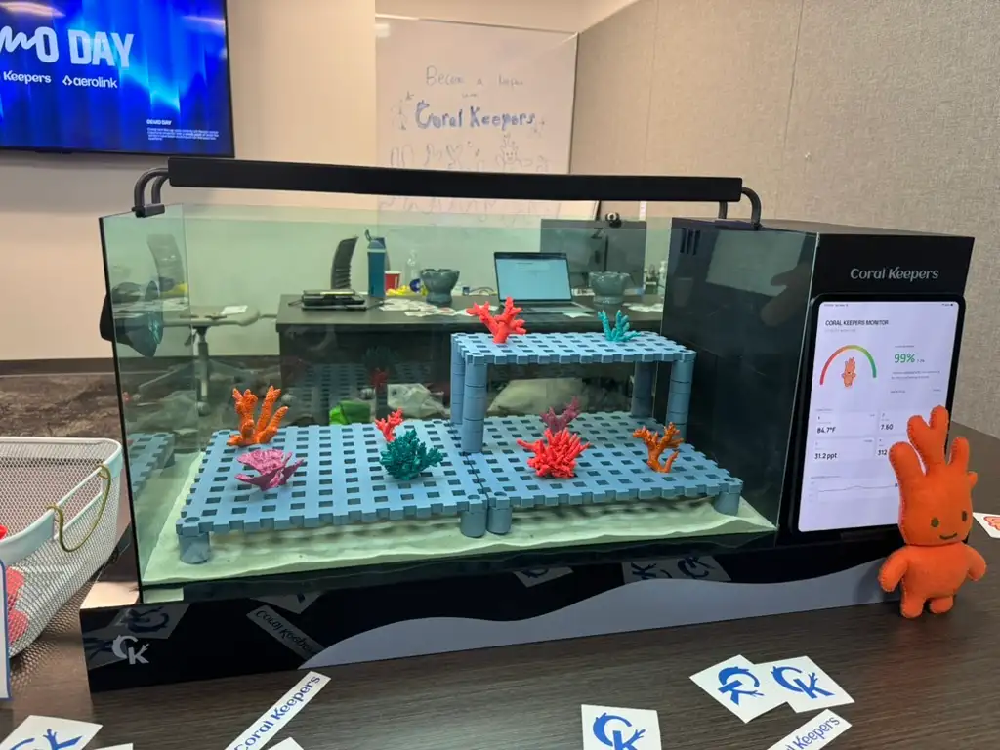
Problem
Coral restoration doesn't scale, because it depends on specialists.
More than 90% of the world's reefs are projected to be threatened by 2030 if current pressures go unchecked (Reefs at Risk Revisited, 2011). Restoration works, and the science is understood, but it runs through marine biologists, grant funding, and localized nurseries. There simply aren't enough people doing it, and no obvious way to add more.
Research
The research changed what we were building.
We spent the first ten weeks on research as a full team: 12 interviews with marine biologists, reef researchers, and academics, plus site visits to the Skidaway Institute of Oceanography and Gray's Reef Ocean Discovery Center. Over 545 data points, affinitized.
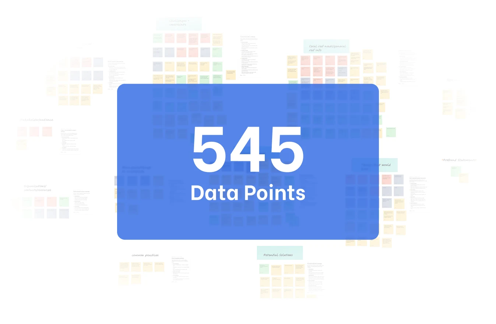
We started out designing in-ocean coral health monitoring: sensors on real reefs, feeding data to scientists. The interviews took that apart. The constraint wasn't measurement, because researchers already knew what was happening to the reefs. The constraint was labor and scale: too few people, too little funding, too slow.
So we rewrote the problem. Not how do we monitor reefs better, but how do we let far more people participate in growing coral. Every decision after that came from the second question, including the one that put a tank in a classroom instead of a sensor in the ocean.
Architecture
Three contexts, not one responsive app.
Our research produced distinct user archetypes, and they don't share a context. A teacher checking the tank between classes, a student working an assignment, and a room glancing at a wall display are three jobs with three different attention budgets, so I built three surfaces rather than one responsive layout.
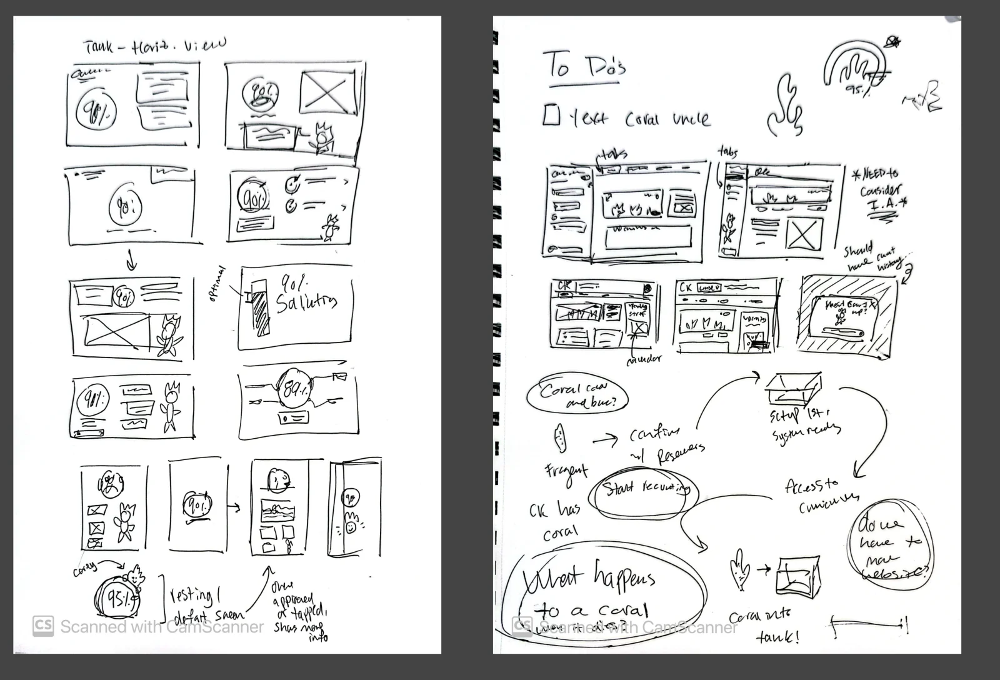
The iPad monitor is ambient. It sits by the tank, shows vitals and nothing else, and needs no interaction.
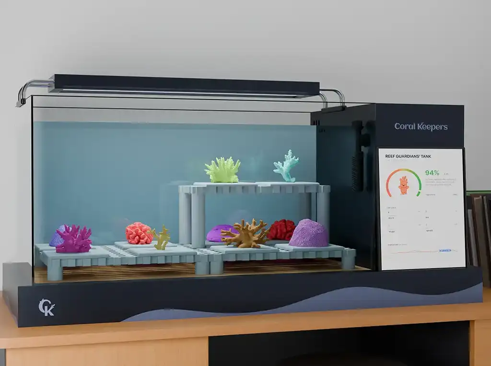
The teacher app is for monitoring away from the tank and escalating to a real biologist when something looks wrong.
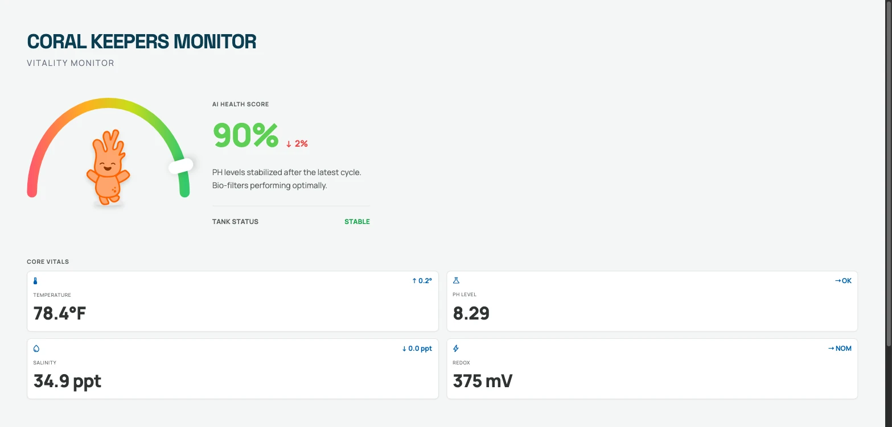
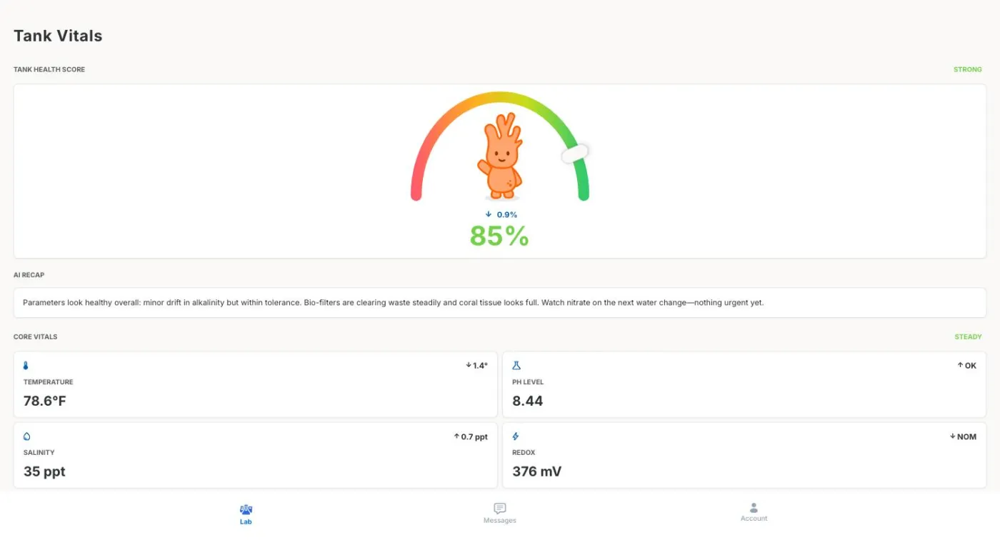
The web platform is where the teaching happens: coursework, assignments, class teams, live tank feed, simulation. It ships as two builds from one codebase, teacher and student, because the jobs diverge too far for role-switching inside one app.
Where the navigation came from
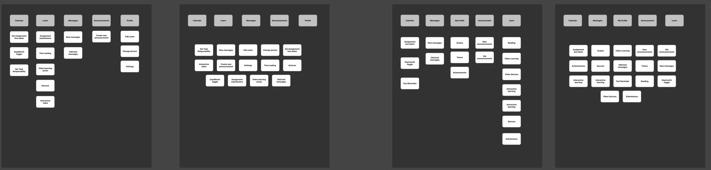
We ran a closed card sort to settle the navigation: four participants, too few to count votes but enough to spot a pattern. The useful result was the outlier, who swept almost everything into one heading. When a category can absorb that much, it isn't a category, it's a bin. Learn was doing too much work until we split the coursework out of it.
The same failure surfaced again in testing, and I nearly missed it there, because naming problems don't show up in success rates.
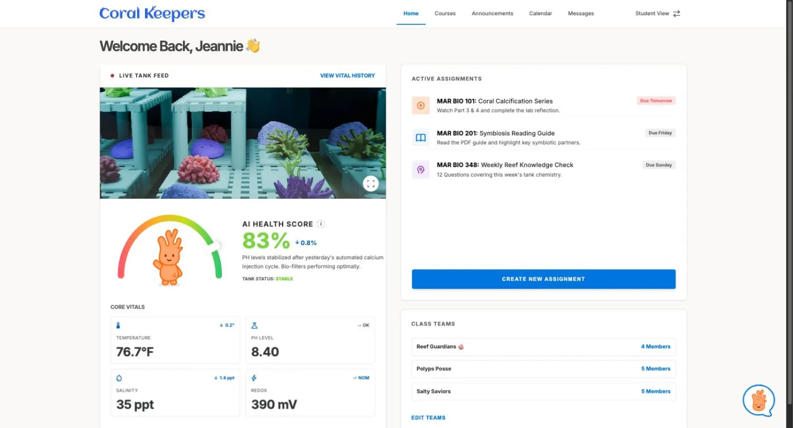
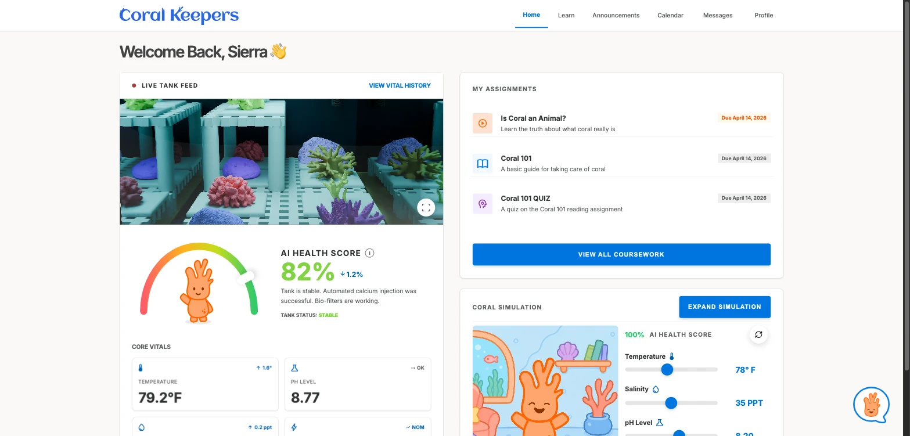
Same tank, same health score, different job: the teacher is monitoring a class, the student is doing the work.
The Simulation
Making bleaching something you cause, not something you read about.
Coral bleaching, when stressed coral expels the algae in its tissue and loses its color, is the hard idea in this curriculum, and it's usually taught as a diagram with an arrow. The simulation lets students drag temperature, salinity, pH, and redox and watch the health score respond. Push far enough and Cory bleaches: he drains of color, the whole scene desaturates with him, and the score turns red.
The science is the visual mechanic. Nobody has to explain what bleaching looks like, because the student just caused it.
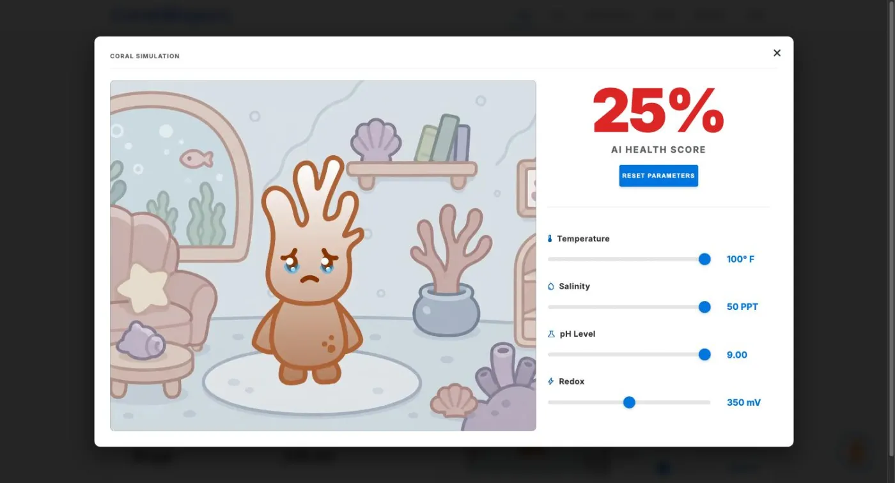
The real simulation, running here. Drag a reading and watch the coral answer, or open it in its own tab.
Building Cory
The hard part was getting an AI to actually know the tank.
Cory became an assistant because of testing. I'd built the vitals carefully, and we watched participants read the numbers without knowing what any of them meant, or whether to act. A well-designed dashboard had told them everything except the thing they needed. So the mascot got a job.
The first version wasn't AI. It was keyword matching, and it demoed fine; we could have shipped it as “AI-powered” and nobody outside would have known. We scrapped it for Gemini 2.5 Flash, because a canned-response bot can't answer a question nobody anticipated, and that's the whole point of an assistant in a classroom.
Then he started getting the numbers wrong. Cory runs as a separate app inside an iframe, a compromise I chose over rebuilding the platform for one feature, and an iframe doesn't share memory with the page around it. Getting live readings across that boundary was the hardest thing I did here; the fix is a tankData payload sent with every message.
He's also instructed never to state a reading he hasn't been given: for kids learning science, a confident wrong number is worse than none. Run standalone, where the salinity field never arrives, he says he doesn't have it rather than inventing one.
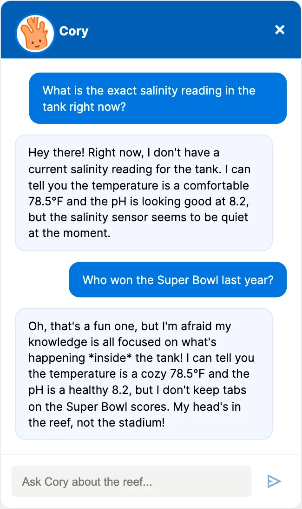
Testing
The success rates hid the real problems.
We ran three rounds: moderated sessions with educators (one teacher walked us straight through her mental model of Google Classroom and Gizmos), an unmoderated Maze study with five participants, and demo day. Five is directional, so the transcripts carried more weight than the numbers.
| Task | Success | Avg. time | Confidence |
|---|---|---|---|
| Create an announcement (phone) | 100% | 3m 03s | 2.67 (difficult to neutral) |
| Ask Cory whether the tank is healthy | 60% | 3m 51s | 3.75 |
| Find the tank's vital history | 100% | 1m 35s | 4.25 (confident) |
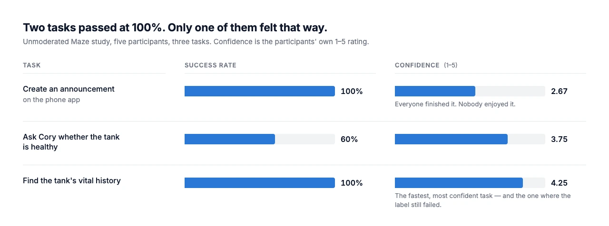
Cory wasn't legible as a chat. Three of five participants struggled to identify the bubble as the way to talk to him. One never found it at all. Another mistook the flipping stat cards for a Cory interaction; she thought reading the numbers was the conversation. I rebuilt the affordance larger and closer to a conventional chat shape.
The most useful finding hid behind a 100% success rate. Every participant found the vital history quickly and confidently, and one of them, looking straight at the right screen, said “I don't know where tank health is.” The feature was in the right place; the word on it was wrong. It was called Insights then. It ships as Vital History now: a fix that cost nothing and would never have surfaced from the numbers.
Task one is the same lesson inverted. Everyone created the announcement; nobody enjoyed it: 2.67 confidence, one participant stuck for six and a half minutes in the messaging flow. A 100% success rate on a task people rate “difficult” is a warning, not a result.
System
One design system, five deployments.
Five separately deployed apps (the four interfaces plus Cory, who runs as his own) drift apart unless something holds them together, so I worked from a component library: colour, type, buttons, the vitals card, across all of them.
Emmaline Kim designed Cory as a character; I made him an instrument. He's the needle in the health gauge, with six states wired to live values, so his condition is the readout. The data doesn't need a legend because the mascot is already showing you.
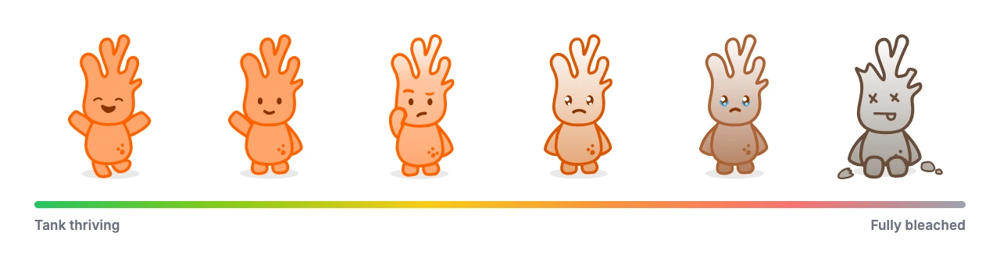
Demo Day
A third round of testing, run on the floor.
We treated demo day as a real testing round rather than a showcase. Twelve people ran two tasks on the student interface (told what to do, not how), and fifty-six filled out a micro-survey, bribed with stickers and candy.
| Task | Success |
|---|---|
| Interact with the coral simulation | 10 / 12 (84%) |
| Take the “Coral Bleaching 101” quiz | 12 / 12 (100%) |
| Micro-survey statement (n=56) | Agreed |
|---|---|
| A viable way to involve the public in real scientific work | 100% (85.7% strongly) |
| Would motivate me to contribute to conservation | 98.2% (83.9% strongly) |
| Increased my understanding of why coral conservation matters | 100% (96.4% strongly) |
Those numbers deserve an asterisk: a self-selected crowd at a student exhibition, standing in front of a coral tank, holding candy. Good signal on comprehension and appeal; not evidence it works in a classroom.
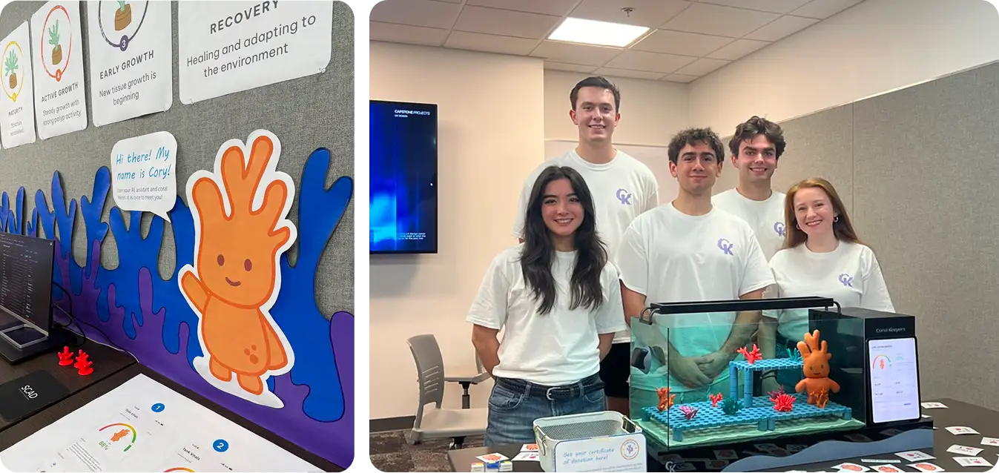
The unplanned finding came from standing with it for hours. Almost everyone asked Cory for a joke, and not one about coral; they wanted to know whether he was real. After a few hours of the same request he started repeating himself, and the illusion broke for anyone standing nearby. People probe an AI's edges before they trust its middle, and Cory's edges were the least-designed part of him.
What I'd Do Differently
What's still broken.
The curriculum is a shell. Real lessons written by people who teach marine science is the difference between a demo and a product. We had assignment structure, not content.
The health scores aren't synced. Each surface runs the same simulation logic against its own variable, so the iPad and the phone can disagree about the same tank. It needs one shared source of truth, which means a backend we didn't have time to build.
Cory's guardrails can be talked around. For a classroom product they need to be enforced server-side.
He needs to be smarter. Deeper coral knowledge, and genuinely varied responses instead of a pool that runs dry, which is exactly what demo day exposed.
Try It
All of it is live.
These are the actual deployed applications, not prototypes.
Student platform Teacher platform Tank monitor Teacher mobile app
Coral Keepers was a five-person capstone by team #ReefHuggers. Courtenay Rushing ran the project, Baz DiFiglia drove the research, Emmaline Kim created Cory as a character and drove the brand system, and Giuseppe Mollo designed and built the physical tank. The first ten weeks of research were all of us.
Want to talk about this project? Email me or see my resume.